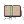

| - | Character | Speed | - | - | Score | - |
|---|---|---|---|---|---|---|
| Aria | 16:08.84 | 449th | 5070 | 417th | ||
| Bard | - | - | - | - | ||
| Bolt | - | - | 558 | 2139th | ||
| Cadence | 9:59.08 | 488th | 29703 | 19th | ||
| Diamond | 14:01.80 | 482nd | 4682 | 1796th | ||
| Dorian | - | - | - | - | ||
| Dove | - | - | - | - | ||
| Eli | - | - | - | - | ||
| Mary | 27:42.41 | 1097th | 4759 | 229th | ||
| Melody | 9:47.54 | 337th | 5335 | 1473rd | ||
| Monk | - | - | 6848 | 136th | ||
| Nocturna | 14:06.84 | 1137th | 8417 | 2715th | ||
| Tempo | 15:29.29 | 1874th | 4838 | 688th | ||
| Coda | - | - | 452 | 183rd | ||
|  | Story | 58:17.38 | 118th | 18673 | 156th | |
| 9char | - | - | 1010 | 1812th | ||
| 13char | - | - | 373 | 797th |
| Speed | ||||||||||||||
|---|---|---|---|---|---|---|---|---|---|---|---|---|---|---|
| Hard | - | - | - | - | - | - | - | - | - | - | - | 37:55.102341st | - | - |
| NR | - | - | - | - | - | - | - | - | - | - | - | - | - | - |
| Rando | - | - | - | - | - | - | - | - | - | - | - | 37:55.10964th | - | - |
| Phasing | - | - | - | - | 91st | - | - | - | - | - | - | - | - | - |
| Mystery | - | - | - | - | - | - | - | - | - | 156th | - | - | - | - |
| Score | ||||||||||||||
| Hard | - | - | - | - | - | - | - | - | - | - | - | 7852273rd | - | - |
| NR | - | - | - | 2162820th | - | - | - | - | - | - | - | - | - | - |
| Rando | - | - | - | 21122250th | - | - | - | - | - | - | - | 6782877th | - | - |
| Phasing | - | - | - | - | 2420220th | - | - | - | - | - | - | - | - | - |
| Mystery | - | - | - | 1324129th | - | - | - | - | - | 3080166th | - | 1189566th | - | - |
| Deathless | - | - | - | 0-5-52284th | - | - | - | - | - | - | - | - | - | - |
Last Updated:2021/06/08 15:53